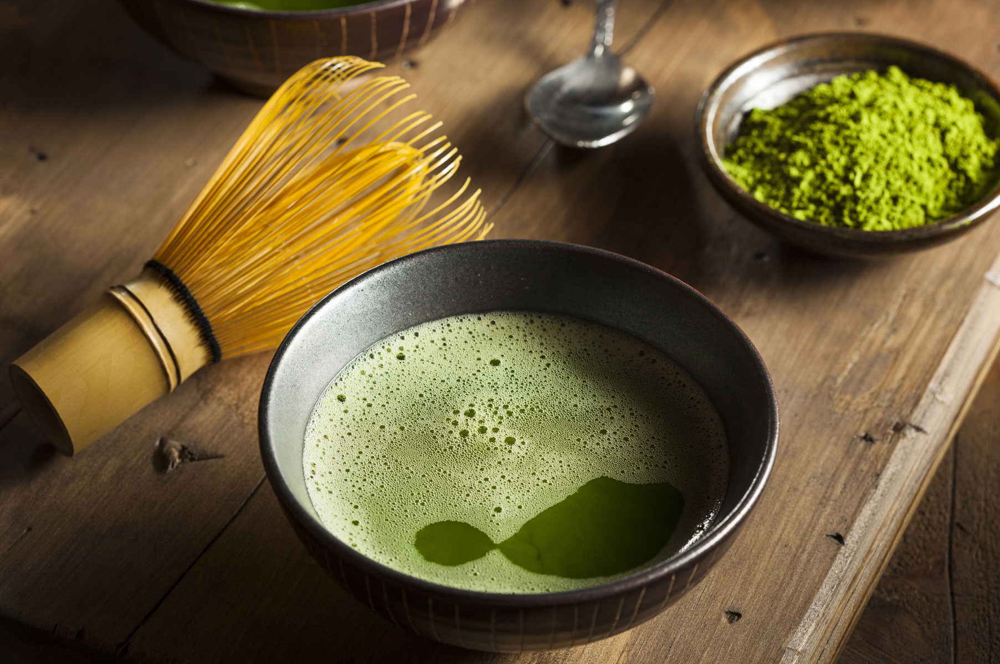
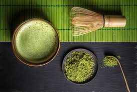
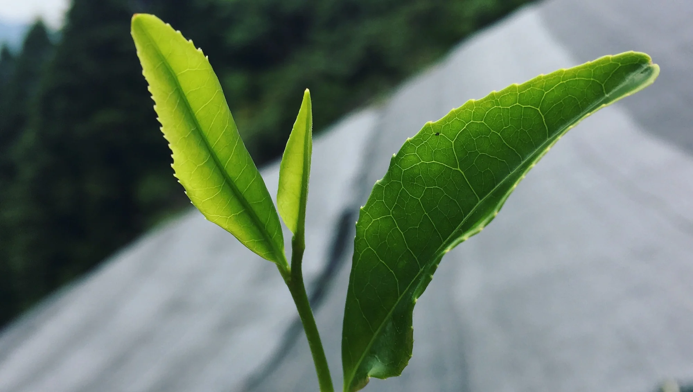
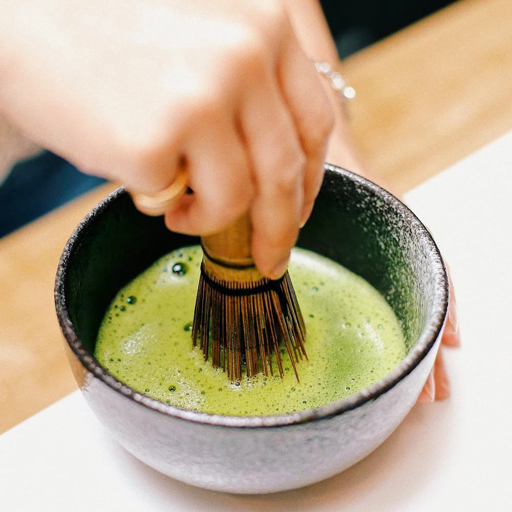

À Propos de Matcha Tea
Chez Matcha Tea, nous croyons que chaque personne se doit de goûter au plaisir de cette petite merveille en provenance du Japon. Le thé matcha est considéré comme un superaliment.
Cette poudre d’un vert électrique, est riche en bons nutriments et particulièrement en antioxydants et vitamines A, C et E. Nous sommes une entreprise passionnée et spécialisée dans la confection de délicieux thés matcha.
Que ce soit le goût naturel du matcha en passant par le matcha goût vanille ou encore celui à la fraise, notre entreprise locale travaille à confectionner sur mesure ses petites merveilles.
Notre Engagement
Matcha Tea ne fait aucune concession sur la qualité et l’origine de son thé matcha. Chaque étape de production est exclusivement réalisée au Japon : le matcha, les arômes et le conditionnement. Chaque production est testée qui garantit une absence totale de présence de pesticides dans nos produits.
Pourquoi choisir le thé matcha ?
De façon non exhaustive, voici quelques-unes des propriétés du thé matcha :
- Grâce à la théanine qu’il contient, il apporte une énergie douce et constitue une bonne alternative au café.
- Il est antistress et relaxant. Ce n’est d’ailleurs pas pour rien que les moines bouddhistes zen consomment du thé matcha depuis des siècles pour leurs méditations !
- Il aide à la régulation de la glycémie et du microbiote intestinal.
- Il améliore le système immunitaire grâce notamment aux antioxydants et vitamines qu’il contient.
- Il accroît les performances sportives et aide l’organisme à récupérer après l’effort. Ceci est principalement dû à la haute teneur en antioxydants qui favorisent l’oxygénation des muscles.
-Il permet également de réguler la production d’acide lactique, responsable des crampes musculaires.
Nos services :
1 - Vente de matcha : Matcha Tea offre un service de vente de matcha de qualité nature ou parfumé. Que ce soit une occasion pour déguster seul ou en groupe notre thé matcha, notre équipe vous offre le meilleur du thé matcha venu directement d’une petite entreprise au Japon.
2 - Vente d’accessoires matcha : Notre équipe vous offre des accessoires de qualité pour perfectionner votre thé matcha et en faire comme des professionnels.
Son histoire
Le matcha vient de Chine lors de la dynastie Sui, sous le nom de « mocha » (chinois, littéralement « thé en poudre »).
Cette tradition est arrivées à son apogée sous les dynasties Tang (7ème-10ème siècle) et Song (10-13ème siècle). La préparation et la consommation de ce thé devint un rituel du bouddhisme Chan, étant bu dans un bol commun en guise de sacrement.
Le bouddhisme Chan et cette tradition furent importés au Japon en 1191 par le moine Eisai. Le thé en poudre fut par la suite oublié en Chine, tandis qu'il devint populaire au Japon. Au 16ème siècle, le maître de thé Sen no Rikyū formula les principes du chanoyu, la cérémonie du thé japonaise, et indiqua que le matcha était le thé à utiliser dans ce contexte.
Sa production
La production du matcha commence quelques semaines avant la récolte, lorsque les buissons de thé sont couverts pour les protéger de la lumière directe du soleil. Cela ralentit la croissance de la plante, rend ses feuilles plus sombres et entraîne la production d’acides animés qui adouciront le goût du thé.
Pour obtenir du matcha, il faut déplier les feuilles pour le séchage. Ainsi, elles vont quelque peu s'émietter et produire du tencha. Le tencha peut ensuite être moulu en une poudre très fine, d'un vert clair ; c’est ainsi que l’on obtient du matcha.
Autrement, si les feuilles sont enroulées avant le séchage, le thé résultant sera du gyokuro.
La saveur du matcha est affectée par ses acides aminés. Les meilleurs matcha ont généralement un arôme plus profond et plus doux que les thés récoltés plus tardivement.
Sa préparation
Le matcha doit être tamisé avant d'être mélangé à l'eau. On utilise à cette fin des tamis spéciaux, généralement en acier inoxidable, au maillage serré, et incluant un réceptacle provisoire. Pour faire passer le thé à travers le tamis, on peut utiliser une spatule de bois spéciale ou placer une pierre polie sur le tamis et le secouer doucement.
Une petite quantité de matcha est placée dans le bol avec une petite quantité d'eau non bouillante, idéalement à 70°C, par la suite. Il faut ensuite secouer la mixture avec un fouet en bambou, jusqu'à l'obtention d'un liquide de consistance uniforme.
Idéalement, aucune trace de poudre de thé ne devrait subsister sur les bords du bol.